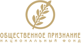
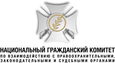
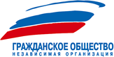
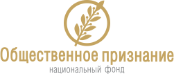

(495) 207-5446,
207-6268

О проекте



05.09.2014 г.
Решение
совместного заседания Попечительского совета, Президиума и Правления Национального фонда «Общественное признание», Независимой организации «В поддержку гражданского общества» и Национального Гражданского Комитета по взаимодействию с правоохранительными, законодательными и судебными органами о реализации проекта «Нашим Героям» в связи с 70-летием Великой Победы
-
Провести интернет — конкурс «Общественное признание» в рамках социально значимого проекта «Нашим Героям», ставшего победителем Конкурса Грантов в соответствии с распоряжением Президента РФ от 17 января 2014 г. N 11-рп об обеспечении государственной поддержки некоммерческих неправительственных организаций, участвующих в развитии институтов гражданского общества.
-
Сопредседателям и членам Попечительского совета и Президиума Независимой организации «В поддержку гражданского общества» и Национального Гражданского Комитета по взаимодействию с правоохранительными, законодательными и судебными органами принять участие и оказать всестороннюю поддержку в проведении данного интернет-конкурса, а также войти в состав его организационных структур (по согласованию)
-
В целях успешной реализации проекта «Нашим Героям» и проведения интернет-конкурса «Общественное признание» к 70-летию Великой Победы среди самодеятельных и профессиональных вокалистов, исполнителей, музыкантов и музыкальных коллективов на лучшее музыкальное произведение, посвященное подвигу нашего многонационального народа в Великой Отечественной войне и сохранению воинской Славы России сформировать:
Оргкомитет и Попечительский совет интернет-конкурса «Общественное признание» проекта «Нашим Героям»
Конкурсную комиссию, Экспертный совет и группу Звездной поддержки интернет-конкурса «Общественное признание»
-
Наряду с сопредседателями, членами Правления и Президиума Национального фонда «Общественное признание», Независимой организации «В поддержку гражданского общества» и Национального Гражданского Комитета включить в вышеуказанные структуры авторитетных деятелей культуры и искусства, представителей руководства заинтересованных министерств и учреждений, гражданских и творческих союзов, электронных и печатных СМИ, известных и популярных артистов и исполнителей, музыкальных продюсеров и экспертов (по согласованию)
-
Обратиться к руководству соответствующих министерств и ведомств, заинтересованных государственных, общественных, медийных и предпринимательских объединений с просьбой поддержать и принять участие в реализации проекта «Нашим Героям» и проведении интернет-конкурса «Общественное признание» в связи с празднованием 70-летия Великой Победы.
-
Отметить победителей интернет-конкурса «Общественное признание», а также наиболее активных участников проекта «Нашим Героям» высокими гражданскими наградами «Общественное признание», а также специальными призами и ведомственными наградами (по согласованию) соответствующих партнерских министерств, государственных и общественных структур.
-
Рассмотреть вопрос о возможности участия в интернет-конкурсе «Общественное признание» музыкантов и музыкальных коллективов из стран СНГ, а также соотечественников из ближнего и дальнего зарубежья или предусмотреть разработку отдельного проекта «Нашим героям» по проведению международного интернет-конкурса «Общественное признание».
Сопредседатели и члены Попечительского совета, Президиума и Правления Национального фонда «Общественное признание», Независимой организации «В поддержку гражданского общества» и Национального Гражданского Комитета по взаимодействию с правоохранительными, законодательными и судебными органами:
Абакумов С.А.
Председатель Правления Национального фонда «Общественное признание»
Казарновская Л.Ю.
Народная артистка России
Швыдкой М.Е.
Специальный Представитель Президента РФ по международному культурному сотрудничеству
Васильев В.А.
Заместитель Председателя Государственной Думы РФ
Лещенко Л.В.
Народный артист России, художественный руководитель театра «Музыкальное агентство»
Ширвиндт А.А.
Художественный руководитель Московского театра Сатиры, народный артист РФ
Гречко Г.М.
Летчик - космонавт, дважды Герой Советского Союза
Лысенко А.Г.
Генеральный директор АНО «Общественное телевидение России», президент Международной академии телевидения и радио
Шохин А.Н.
Президент Российского союза промышленников и предпринимателей
Гусев П.Н.
Главный редактор газеты «Московский комсомолец», президент Союза журналистов Москвы
Проничев В.Е.
Председатель ОГО ВФСО «Динамо», генерал армии
Якубович Л.А.
Автор и ведущий телевизионных программ на Первом канале, народный артист РФ
Гусман М.С.
Первый заместитель генерального директора ИТАР - ТАСС
Торкунов А.В.
Ректор МГИМО МИД России, академик РАН
Дементьев А.Д.
Поэт, политический обозреватель ВГТРК «Радио России»
Третьяк В.А.
Президент Федерации хоккея России, депутат Государственной Думы РФ
Решение
совместного заседания Попечительского совета, Президиума и Правления Национального фонда «Общественное признание», Независимой организации «В поддержку гражданского общества» и Национального Гражданского Комитета по взаимодействию с правоохранительными, законодательными и судебными органами о реализации проекта «Нашим Героям» в связи с 70-летием Великой Победы
(PDF, 1 МБ)

Национальный фонд «Общественное признание» — российская некоммерческая организация, созданная в 1998 году в целях содействия становлению и развитию зрелого гражданского общества и сильного правового демократического государства в России.
Одной из главных задач Фонда является возрождение в обществе высоких духовных идеалов и моральных стимулов, продвижение и утверждение в государственных и гражданских институтах, а также в общественном мнении россиян высоких нравственных критериев и ценностей.
Национальным фондом в 1999 году были учреждены высокие гражданские награды «Общественное признание», внесенные в Федеральный геральдический регистр и имеющие соответствующее Свидетельство Геральдического совета при Президенте РФ. Данные общественные награды в десяти номинациях, охватывающих все сферы деятельности наших сограждан, дают возможность объективно и по достоинству оценить заслуги людей, имеющих активную гражданскую позицию, чья успешная научно — образовательная, творческая или любая другая профессиональная и общественно значимая деятельность во благо Отечества пользуется заслуженным признанием и уважением в российском обществе и государстве.
Приоритетными направлением деятельности Национального фонда «Общественное признание» совместно с членами Национального Общественного холдинга — Независимой организацией «В поддержку гражданского общества» и Национальным Гражданским Комитетом по взаимодействию с правоохранительными, законодательными и судебными органами (см. Пресс — релиз о Национальном общественном холдинге) является проведение постоянно действующих Гражданских благотворительных акций «Мужество и Милосердие» и «Чужой беды не бывает» в Северо — кавказских республиках и других регионах страны по социальной и духовной поддержке ветеранов войны и боевых действий, участников контртеррористических операций, членов семей погибших защитников Отечества, а также детей — инвалидов и потерявших кормильца, в т. ч. пострадавших от военных действий и терактов.
Национальный фонд «Общественное признание» в своей работе тесно взаимодействует с руководством силовых министерств и ведомств, Совета Безопасности РФ, профильных комитетов Совета Федерации и Государственной Думы РФ. При реализации своих международных программ Фонд активно сотрудничает и получает поддержку от руководства МИД России и Россотрудничества. Основные проекты Фонда реализуются при поддержке и участии Общественной палаты РФ, а также других крупнейших и влиятельных общественных, предпринимательских, медийных и творческих объединений.
(PDF, 1 МБ)